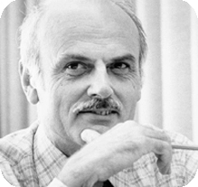

Biography of Edgar F Codd
When talking about database management system what comes to our mind? Probably MYSQL, Oracle,
PostgreSQL, etc. There are lots of Relational Database Management Systems (RDMS) developed at the
present. Relational databases are today used on your PC, Smartphone, ATM, Banks, movie theatre, Airlines
ticket reservations, Hotel room bookings, various websites, etc. It means they are everywhere where data
is collected, stored and retrieved. This only was possible because of only one man, he is none other
than Edgar Frank Codd. "A British-born American computer scientist and a mathematician who laid the
theoretical foundation for relational databases was born on August 23, 1923, in Portland, Dorset,
England and passed away on April 18, 2003, in Williams Island, Florida at the age of 79".[1]

Talking about his life according to author Katie Hafner on The New York Times report “Edgar Codd
attended Poole Grammar School, he studied mathematics and chemistry at Exeter College, Oxford, before
serving as a pilot in the Royal Air Force during the Second World War. In 1948 at age 25, he moved to
New York to work for IBM as a mathematical programmer. Then he moved to Ottawa, Canada. While in Canada,
he established a computing center for the Canadian guided missile program. A decade later he returned to
the U.S. and received his doctorate in computer science from the University of Michigan in Ann Arbor.
His thesis was about self-replication in cellular automata, extending on work of von Neumann and showing
that a set of eight states was sufficient for universal computation and construction. Two years later he
moved to San Jose, California, to work at IBM‘s San Jose Research Laboratory, where he continued to work
until the 1980s”. [1]
Before E.F.Codd intervened the database system history, in 1970, there was two highly used model
for the database one is hierarchical model and the other one is network model. The hierarchical model
was used by IBM's Information Management System (IMS), the dominant database system at the time. The
network model had been specified by a standards committee called CODASYL and implemented by several
other database system vendors during the era before the relational database systems. [2] The model used
either tree or graph data structures and use pointers to preserve the links between the data. Retrieving
a record stored toward the bottom of the tree would involve first navigating through all of its ancestor
records. These databases were fast but were inflexible and due to this inflexibility database
administrators often found themselves needing to query records from the bottom of the tree without
having an obvious place to start at the top. Codd saw this inflexibility as a symptom of a larger
problem. Programs using a hierarchical or network database had to know about how the stored data was
structured. He formed the concepts for organizing and accessing data that are embodied in the relational
database. This ground-breaking feature of that model replaced the hierarchical or navigational database
structure. According to IBM's archive history the relational model was introduced in 1970. Edgar Codd
published a paper called “A Relational Model of Data for Large Shared Data Banks.”[2] The 1970 paper
became one of the most important research papers in computer history.
In the introduction of his 1970 paper ”A Relational Model of Data for Large Shared Data Banks”, Codd
motivates “the search for a better model by arguing for data independence which he defines as “the
independence of application programs and terminal activities from growth in data types and changes in
data representation.” and he also defines the problem that the existing database was facing during that
era. But even though his paper was impressive and would solve the shortcomings that hierarchical and
network model had, IBM largely ignored his work, as the company was investing heavily at the time in
commercializing a different type of database system, the IMS/DB”[2]. Since introducing a completely new
model does not happen in a night as we know that "Rome was not built in one day" thus, it takes time in
order to replace the old system and adjust to a new one. But to Codd's frustration, IBM included his
works on Future Systems project but handed the project to developers who were not thoroughly familiar
with Codd's ideas. As a result, they did not use Codd's own Alpha language but created a non-relational
one, SEQUEL. “SEQUEL was so superior to pre-relational systems that it was copied, in 1979, based on
pre-launch papers presented at conferences, by Larry Ellison, of Relational Software Inc, in his Oracle
Database, which actually reached market before SQL/DS because of the then-already proprietary status of
the original name, SEQUEL had been renamed SQL. System R was a success, and in 1981 IBM announced its
first relational database product, SQL/DS. DB2, initially for large mainframe machines, was announced in
1983” [2].
So, this is how E.F. Codd changes the course of history and brought a revolution in the world of
Database Management system by introducing us to Relational Database Management System (RDBMS) which is
an integral part of our world which is driven by data at Present.
Reference:
1. Katie Hafner. 2003. Edgar F. Codd, 79, Dies; Key Theorist of Databases. The New York Times. Retrieved
April 30, 2019, from
https://www.nytimes.com/2003/04/23/business/edgar-f-codd-79-dies-key-theorist-of-databases.html.
2. 2013. IBM Archives: Edgar F. Codd. Retrieved April 30, 2019 from
//www.ibm.com/ibm/history/exhibits/builders/builders_codd.html.